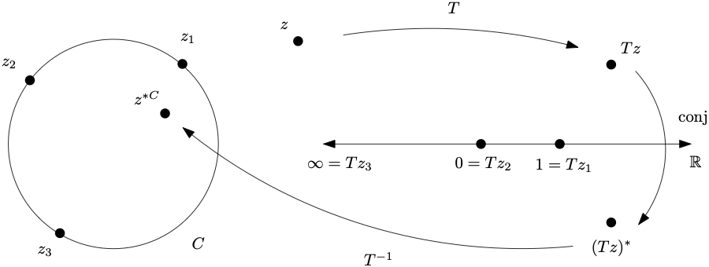

Möbius geometry provides a unifying framework for studying planar geometries. In particular, the transformation groups of hyperbolic and elliptic geometries in the sections that follow are subgroups of the group of Möbius transformations.
Subsection3.2.1Möbius transformations
A Möbius transformation (also called a linear fractional transformation) of the extended complex plane \(\extC\) is a function of the form
where \(z\) is a complex variable, \(a,b,c,d\) are complex constants, and \(ad-bc\neq 0\text{.}\) To complete the definition, we make the assignments \(f(-d/c)=\infty\) and \(f(\infty)=a/c\) if \(c\neq 0\text{.}\) If \(c=0\text{,}\) we assign \(f(\infty)=\infty\text{.}\)
Note on notational convention: It is customary to use capital letters such as \(S,T,U\) to denote Möbius transformations. It is also customary to omit the parentheses, and to write \(Tz\) instead of \(T(z)\) to denote the value of a Möbius transformation.
Checkpoint3.2.1.
Let \(f(x)=(ax+b)/(cx+d)\) be a function of a real variable \(x\) with real constants \(a,b,c,d\) with \(ad-bc\neq 0\) and \(c\neq 0\text{.}\)
Show that \(\displaystyle \lim_{x\to
-d/c}|f(x)|=\infty\text{.}\)
Show that \(\displaystyle \lim_{x\to \infty}f(x)=a/c\text{.}\)
Checkpoint3.2.2.
Show that the condition \(ad-bc\neq 0\) is necessary and sufficient for invertibility. Find a formula for the inverse of \(z\to (az+b)/(cz+d)\text{.}\)
Checkpoint3.2.3.
Show that the composition of two Möbius transformations is a Möbius transformation. Suggestion: First show that the composition has the form \(z\to \frac{rz+s}{tz+u}\text{.}\) Next, instead of a brute force calculation to check that \(ru-ts\neq 0\text{,}\) use Checkpoint 3.2.2.
Definition3.2.4.
The set of all Möbius transformations forms a group \(\M\text{,}\) called the Möbius group , under the operation of function composition. Möbius geometry is the pair \((\extC,\M)\text{.}\)
There is a natural relationship between Möbius group operations and matrix group operations. The map \({\mathcal T}\colon
GL(2,\C)\to \M\) given by
Homotheties, rotations, translations, and inversions (see Table 3.1.4 in Section 3.1) are special cases of Möbius transformations. These basic transformations can be viewed as building blocks for general Möbius transformations, as follows.
Proposition3.2.6.
Every Möbius transformation is a composition of homotheties, rotations, translations, and inversions.
Checkpoint3.2.7.
Identify the values of the coefficients \(a,b,c,d\) in a Möbius transformation \(z\to \frac{az+b}{cz+d}\) that is a homothety, rotation, translation, and inversion, respectively.
Write a Möbius transformation that does "clockwise rotation by one-quarter rotation about the point \(2-i\)".
Subsection3.2.2The Fundamental Theorem of Möbius Geometry
The Fundamental Theorem of Möbius Geometry says that all three-point sets are congruent. It will turn out to be convenient to work with the "standard" three-point set \(\{1,0,\infty\}\text{.}\) Given any three distinct complex numbers \(z_1,z_2,z_3\) it is easy to check that the transformation \(T\) given by
Verify that (3.2.3) satisfies \(Tz_1=1,Tz_2=0,Tz_3=\infty\text{.}\)
It is easy to adapt (3.2.3) to the extended complex plane, where one of the \(z_i\) may be the point at infinity.
Lemma3.2.11.Any three-point set is congruent to \(\{1,0,\infty\}\).
Let \(z_1,z_2,z_3\) be distinct points in the extended complex plane. There exists a Möbius transformation \(T\) such that \(Tz_1=1,Tz_2=0,Tz_3=\infty\text{.}\)
Checkpoint3.2.12.
Prove Lemma 3.2.11 by finding explicit formulas for \(T\) for each of the three cases \(z_1=\infty\text{,}\)\(z_2=\infty\) and \(z_3=\infty\text{.}\)
Solve \(z=\frac{az+b}{cz+d}\text{.}\) You will need to consider cases.
Proposition3.2.15.The Fundamental Theorem of Möbius Geometry.
A Möbius transformation is completely determined by any three input-output pairs. This means that for any triple of distinct input values \(z_1,z_2,z_3\) in \(\extC\) and any triple of distinct output values \(w_1,w_2,w_3\) in \(\extC\text{,}\) there is a unique \(T\in \M\) such that \(Tz_i=w_i\) for \(i=1,2,3\text{.}\)
Subsection3.2.3Cross ratio
Given three distinct points \(z_1,z_2,z_3\) in \(\extC\text{,}\) we write \((\cdot,z_1,z_2,z_3)\) to denote the unique Möbius transformation that satisfies \(z_1\to
1\text{,}\)\(z_2\to 0\text{,}\) and \(z_3\to \infty\) (the existence and uniqueness of this transformation is guaranteed by the Fundamental Theorem of Möbius Geometry). We write \((z_0,z_1,z_2,z_3)\) to denote the image of \(z_0\) under \((\cdot,z_1,z_2,z_3)\text{.}\) The expression \((z_0,z_1,z_2,z_3)\) is called the cross ratio of the 4-tuple \(z_0,z_1,z_2,z_3\text{.}\) By (3.2.3), we have the following explicit formula for the cross ratio.
The transformations \((\cdot,z_1,z_2,z_3)\) and \((\cdot,Tz_1,Tz_2,Tz_3)\circ T\) both send \(z_1\to 1\text{,}\)\(z_2\to 0\text{,}\) and \(z_3\to \infty\text{,}\) so they must be equal, by the Fundamental Theorem. Now apply both transformations to \(z_0\text{.}\)
Subsection3.2.4Clines (generalized circles)
A Euclidean circle or straight line is called a cline (pronounced "kline") or generalized circle. The propositions and corollaries in this subsection show that the set of all clines is a single congruence class of figures in Möbius geometry.
Proposition3.2.17.
Let \(z_1,z_2,z_3\) be distinct points in \(\extC\text{,}\) let \(T=(\cdot,z_1,z_2,z_3)\text{,}\) and let \(C_T=T^{-1}\left(\extR\right)\) be the inverse image of the extended real line \(\extR=\R\cup \{\infty\}\) under \(T\text{.}\) Then \(C_T\) is a Euclidean circle or straight line. Furthermore, \(C_T\) is the unique Euclidean circle or straight line that contains the points \(z_1,z_2,z_3\text{.}\)
Corollary3.2.18.
The cross ratio \((z_0,z_1,z_2,z_3)\) is real if and only if \(z_0,z_1,z_2,z_3\) lie on a Euclidean circle or straight line.
Let \(C\) be a Euclidean circle or straight line in \(\extC\) and let \(T\) be any Möbius transformation. Then \(T(C)\) is a Euclidean circle or straight line.
Let \(z_1,z_2,z_3\) be three points on \(C\) and let \(w_1=Tz_1,w_2=Tz_2,w_3=Tz_3\text{.}\) Let \(U=(\cdot,z_1,z_2,z_3)\) and let \(V=(\cdot,w_1,w_2,w_3)\text{.}\) Explain why \(T=V^{-1}U\) and hence that \(T(C)=V^{-1}U(C)=V^{-1}(\extR)\) must be a cline.
Start here: Let \(C,D\) be two clines. Let \(z_1,z_2,z_3\) be three points on \(C\) and let \(w_1,w_2,w_3\) be three points on \(D\text{.}\) Let \(U=(\cdot,z_1,z_2,z_3)\) and let \(V=(\cdot,w_1,w_2,w_3)\text{,}\) and let \(T=V^{-1}U\text{.}\) Explain why \(T\) takes \(C\) to \(D\text{.}\)
Subsection3.2.5Symmetry with respect to a cline
Geometrically, the conjugation map \(z\to z^{\ast}\) in the complex plane is reflection across the real line. This "mirror" symmetry generalizes to symmetry with respect to any cline, as follows. Given a cline \(C\) that contains \(z_1,z_2,z_3\) in \(\extC\text{,}\) let \(T=(\cdot,z_1,z_2,z_3)\text{.}\) Given any point \(z\text{,}\) the symmetric point with respect to \(C\) is
where \(\conj\colon \extC\to \extC\) is the extension of the conjugation map to the extended complex plane that sends \(\infty\to \infty^\ast=\infty\text{.}\) The idea is to map \(C\) to the real line via \(T\text{,}\) then conjugate, then map the real line back to \(C\text{.}\) See Figure 3.2.24.

Figure3.2.24.Symmetric points \(z,z^{\ast C}\) with respect to the circle \(C\)
Checkpoint3.2.25.
Show that the symmetric point of a symmetric point is the point you started with. That is, show that \((z^{\ast C})^{\ast C}=z\text{.}\) This allows us to speak of "a pair of symmetric points" without ambiguity.
The definition (3.2.5) of \(z^{\ast C}\) depends only on the cline \(C\text{,}\) and not on the three points \(z_1,z_2,z_3\text{.}\)
Proposition3.2.27.
Let \(C\) be a cline and let \(S\) be a Möbius transformation. If \(z,z'\) are a pair of points that are symmetric with respect to \(C\text{,}\) then \(Sz,Sz'\) are symmetric with respect to the cline \(S(C)\text{.}\) That is, we have
Let \(z_1,z_2,z_3\) be three points on \(C\text{,}\) so that \(Sz_1,Sz_2,Sz_3\) are three points on \(S(C)\text{.}\) Let \(T=(\cdot,z_1,z_2,z_3)\) and let \(U=(\cdot,Sz_1,Sz_2,Sz_3)\text{.}\) By invariance of the cross ratio, we have
We conclude this section on Möbius geometry with a discussion of the normal form of a Möbius transformation. We begin with a Lemma.
Lemma3.2.28.
If a Möbius transformation has exactly two fixed points \(0\) and \(\infty\text{,}\) then it has the form \(z\to \alpha z\) for some nonzero \(\alpha\in
\C\text{.}\) If a Möbius transformation has a single fixed point at \(\infty\text{,}\) then it has the form \(z\to z+\beta\) for some nonzero \(\beta\in \C\text{.}\)
Now suppose that a Möbius transformation \(T\) has two fixed points, \(p\) and \(q\text{.}\) Let \(S\) be given by \(Sz = \frac{z-p}{z-q}\text{.}\) Let \(w=Sz\) and let \(U=S\circ T\circ S^{-1}\) be the transformation of the \(w\)-plane that is conjugate to \(T\) via \(S\) (see Exercise Group 1.3.4.3–6). It is easy to check that \(U\) has exactly two fixed points \(0\) and \(\infty\text{.}\) Applying the previous Lemma, we have \(Uw=\alpha w\) for some nonzero \(\alpha\in
\C\text{.}\) Applying both sides of \(S\circ T=U\circ S\) to \(z\text{,}\) we have the following normal form for \(T\text{.}\)
The transformation \(T\) is called elliptic, hyperbolic, or loxodromic if \(U\) is a rotation (\(|\alpha|=1\)), a homothety (\(\alpha \gt 0\)), or neither, respectively.
Finally, suppose that a Möbius transformation \(T\) has exactly one fixed point at \(p\text{.}\) Let \(S\) be given by \(Sz = \frac{1}{z-p}\text{.}\) Again, let \(w=Sz\) and let \(U=S\circ T\circ S^{-1}\text{.}\) This time, \(U\) has exactly one fixed point at \(\infty\text{.}\) Applying the Lemma, we have \(Uw=w+\beta\) for some nonzero \(\beta\in
\C\text{.}\) Applying both sides of \(S\circ T=U\circ S\) to \(z\text{,}\) we have the following normal form for \(T\text{.}\)
Figure3.2.30.The polar coordinate grid and Steiner circle coordinate grid
Figure3.2.31.Degenerate coordinate grid lines and degenerate Steiner circles
The discussion of normal forms show that any non-identity Möbius transformation is conjugate to one of two basic forms, \(w\to \alpha w\) or \(w\to w+\beta\text{.}\) The natural coordinate system for depicting the action of \(w\to
\alpha w\) is standard polar coordinates. See Figure 3.2.30. A homothety is a flow along radial lines and a rotation is a flow around polar circles. The natural "degenerate" coordinate system for depicting a translation \(w\to
w+\beta\) is a family of lines parallel to the line that contains the origin and \(\beta\text{.}\) A translation by \(\beta\) is a flow along these parallel lines. See Figure 3.2.31.
Pulling the polar and degenerate coordinate grids back to the \(z\)-plane by \(S^{-1}\) leads to coordinate grids called Steiner circles. 1
The convention for which Steiner circles are considered "first" or "second" kinds is not universal. Here we follow the convention used by Ahlfors [1] and Henle [4].
In the case where \(T\) has two fixed points \(p,q\text{,}\) the conjugating map \(Sz=\frac{z-p}{z-q}\) takes \(p\to 0\text{,}\)\(q\to
\infty\text{.}\) Therefore \(S^{-1}\) maps \(0\to p\) and \(\infty \to q\text{.}\) The transformation \(S^{-1}\) maps radial lines in the \(w\)-plane to clines in the \(z\)-plane that contain \(p\) and \(q\) called Steiner circles of the first kind and \(S^{-1}\) maps polar circles in the \(w\)-plane to clines in the \(z\)-plane called Steiner circles of the second kind or circles of Apollonius. See Figure 3.2.30.
In the case where \(T\) has one fixed point \(p\text{,}\) the conjugating map \(Sz=\frac{1}{z-p}\) sends \(p\to \infty\text{,}\) so \(S^{-1}\) maps \(\infty \to p\text{,}\) and \(S^{-1}\) maps lines in the \(w\)-plane that are parallel to the line through \(0\) and \(\beta\) to clines in the \(z\)-plane that contain \(p\text{.}\) Every cline in this family is tangent to every other cline in this family at exactly the one point \(p\text{.}\) Clines in this family are called degenerate Steiner circles. See Figure 3.2.31. Table 3.2.32 summarizes the graphical depiction of Möbius transformations.
Table3.2.32.Summary of Steiner circle pictures of Möbius transformations
normal form type
graphical dynamic
elliptic
flow along Steiner circles of the second kind
hyperbolic
flow along Steiner circles of the first kind
loxodromic
composition of elliptic and hyperbolic flows
parabolic
flow along degenerate Steiner circles
Exercises3.2.8Exercises
1.Decomposition of Möbius transformations into four basic types.
Explain why a transformation of the form \(z\to az\text{,}\) with \(a\) any nonzero complex constant, is a composition of a homothety and a rotation.
Explicitly identify each homothety, rotation, translation, and inversion in (3.2.8) to (3.2.11) in the derivation below for the case \(c\neq 0\text{.}\)
Start by using Lemma 3.2.11 to get a Möbius transformation \(U\) that maps \(z_1,z_2,z_3\) to \(1,0,\infty\text{,}\) and there is a Möbius transformation \(V\) that maps \(w_1,w_2,w_3\) to \(1,0,\infty\text{.}\)
3.
Find Möbius transformations that make the following assignments.
\(\displaystyle 1\to a, 0\to b, \infty\to c\)
\(\displaystyle a\to d, b\to e, c\to f\)
4.
Prove Proposition 3.2.17. Suggestion: Let \(Tz=\frac{az+b}{cz+d}\text{,}\) then manipulate \(Tz=(Tz)^\ast\) to an equation with \(|z|^2,z,z^\ast\) terms and coefficients involving \(a,b,c,d\) and their conjugates. For the case when the coefficient of \(|z|^2\) is not zero, use "complex completing the square" (see (1.1.23)) to derive the equation of a circle. Peek at the first part hint below if you need to, and use it to work partially forwards from \(Tz=(Tz)^\ast\text{,}\) and partially backwards from the equation in the hint. For the case when the coefficient of \(|z|^2\) is zero, derive the equation for a line. For the "furthermore" statement, you will need to show that any three points in the plane determine a unique circle or straight line. This is a Euclidean statement, and it is straightforward to prove this using Euclidean methods (peek at the second part of the hint below if you need to).
Why three noncollinear points \(P,Q,R\) determine a unique circle? The center \(C\) of the circle must be the intersection of the perpendicular bisectors of segments \(PQ\text{,}\)\(QR\text{.}\) The radius must be the distance from \(C\) to any one of \(P,Q,R\text{.}\)
Figure3.2.33.Geometry for symmetric points \(z,z^{\ast C}\) with respect to the cline \(C\)
5.Symmetry with respect to a cline.
Prove Proposition 3.2.26 by completing the details in the following outline. Let \(C=T^{-1}(\extR)\) be a cline that contains points \(z_1,z_2,z_3\text{,}\) where \(T=(\cdot,z_1,z_2,z_3)\text{.}\) First, consider the case when \(C\) is a circle, say, with equation \(|z-a|=r\text{,}\) where \(a,r\) are the center and radius, respectively, of \(C\) (see (1.1.20)).
Square both sides of \(|z-a|=r\) and solve for \(z^\ast\) to get
Explain how invariance of the cross ratio is used to justify the equality (1) in this derivation.
Explain how we can conclude that \(z^{\ast C}=
\frac{r^2}{(z-a)^\ast}+a\text{,}\) and that indeed this does not depend on the choice of \(z_1,z_2,z_3\text{.}\)
Now suppose that \(C\) is a line, say, with equation \(\im(az+b)=0\) (see (1.1.21)). This is the same as \(az+b=(az+b)^\ast\text{.}\) Solve to get
Explain how invariance of the cross ratio is used to justify the equality (1) in this derivation.
Explain how we can conclude that \(z^{\ast C}=\frac{z^\ast
a^\ast + b^\ast - b}{a}\text{,}\) and that indeed this does not depend on the choice of \(z_1,z_2,z_3\text{.}\)
Show that \(z,z'\) are symmetric with respect to a circle \(C\) with center \(a\) and radius \(r\) if and only if \(|z-a||z'-a|=r^2\) and \(z,z'\) lie on the same ray emanating from \(a\text{.}\) See Figure 3.2.33. Hint.
The equation for \(z^{\ast C}\) in part iii gives \((z'-a)(z-a)^\ast = r^2\text{.}\) For the first statement, take the norm of both sides. For the second statement, take the argument of both sides.
Show that \(z,z'\) are symmetric with respect to a line \(C\) if and only if \(z,z'\) are reflections of one another across \(C\text{.}\) See Figure 3.2.33.
Find the normal form and sketch a graph using Steiner circles for the following transformations.
\(\displaystyle z\to \frac{1}{z}\)
\(\displaystyle z\to \frac{3z-1}{z+1}\)
8.
Let \(p\) be the single fixed point of a Möbius transformation that is conjugate to \(w\to w+\beta\) via \(Sz=\frac{1}{z-p}\text{.}\) Show that the single line in the degenerate Steiner clines through \(p\) is parallel to the direction given by \(\beta^\ast\text{.}\)
Hint.
Show that \(S^{-1}w=\frac{pw+1}{w}\text{,}\) so \(S^{-1}\) takes \(0,\beta,\infty\) to \(\infty,\frac{p\beta+1}{\beta},p\text{.}\) Thus the single degenerate Steiner straight line through \(p\) is in the direction given by \(\frac{p\beta+1}{\beta}-p
=\frac{1}{\beta}\propto \beta^\ast\text{.}\)
9.
Show that a (generalized) circle of Apollonius (a Steiner circle of the second kind) is characterized as the set of points of the form